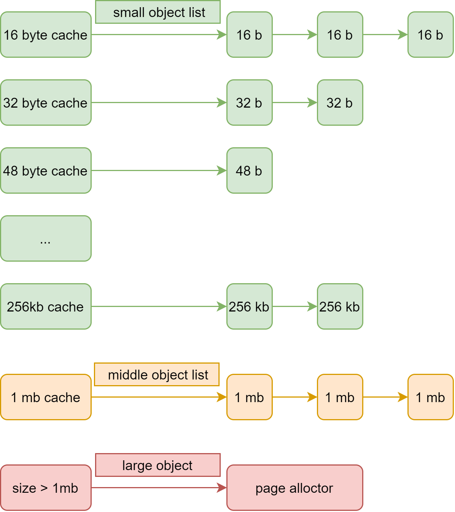

内核虚拟内存管理之堆内存
一、描述
对于应用程序来说，可以使用 malloc 和 free 来动态地分配内存，那么，对于内核来说，也需要这样的功能。
所以，需要在内核中实现同样的功能，在 nxos 里面，它们是 NX_MemAlloc 和 NX_MemFree。
我们是使用基于缓存的链表来管理堆，这种方式的原理是，在释放一个页面后，会放到一个链表上面，下次分配的时候，直接从链表获取内存对象即可。
二、原理
在 heap cache 算法中，每个小的对象都有一个对应的链表来管理内存对象，分配的时候先去链表上获取对象，
没有对象才重新从物理内存管理器中分配，有的话就直接从链表上面摘取。
释放的时候，也是先释放到链表上面，当链表超出了最大链表长度阈值的时候，才会释放到物理内存分配器中。
在 heap cache 中，内存对象被划分成3类，小(16byte <= size <= 256kb)、中(256kb < size <= 1mb)、大(size > 1mb)内存对象。
对于小内存对象，会划分得比较细，如：16, 32, 48, 64, 80, 96, 112, 128等。
对于中内存对象，就是使用一个链表来管理。
对于大内存对象，就直接从物理内存管理器分配和释放，不使用链表管理。
三、框架图

四、接口
内核分配堆内存的接口，需要传入待分配内存的大小，即可获取一个内存地址，如果为空，那么就是分配失败了。
通常，内核会使用 NX_MemAlloc 去分配内存。
void *NX_HeapAlloc(NX_Size size);
#define NX_MemAlloc(size) NX_HeapAlloc(size)
内存释放堆内存的时候，需要传入内存对象地址，并返回释放的状态。
通常，内核会使用 NX_MemFree 去释放内存。
NX_Error NX_HeapFree(void *object);
#define NX_MemFree(ptr) NX_HeapFree(ptr)
除此之外，还提供了一个获取某个内存对象大小的功能，传入地址即可获取内存对象所在的 cache 的大小。
使用的时候需要注意，必须是通过 NX_HeapAlloc 分配的内存对象。
NX_Size NX_HeapGetObjectSize(void *object);